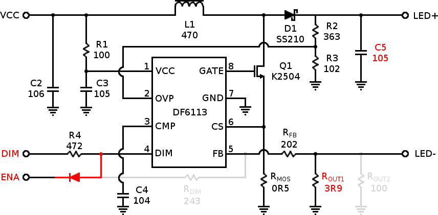
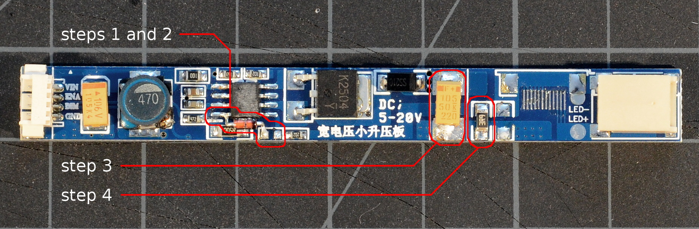
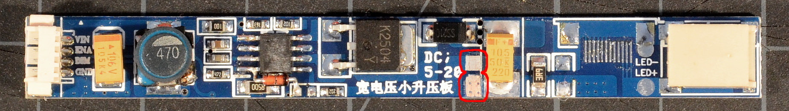
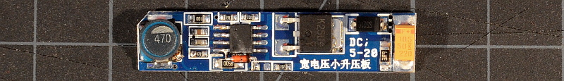

The "Simpleboost" Kit for Thinkpads
for the X60, X60s, X60t, X61t, X61s, and X61t in particular
| simpleboost |
notes |
dim range |
~cost |
| PWM-mode mod |
boost, 30-50V output,
10 LED strings minimum for 20V input |
6:1 |
$15-20 |

|
- The PWM mod is simple to make both in full-sized and
trimmed form using either surface mount or through-hole
components.
- Requires modification to work with Thinkpad
brightness controls
- Narrow dimming range
- Tighter requirements for LED
strips than the other kits (each series string must be at least 10 LEDs)
|
This driver is a simple boost convertor with constant-current
output. Some vendors sell it with an additional flat-ribbon
connector, most sell it with the ribbon connector missing and
those solder pads left bare as in the pic above. The identifcation
marks on the controller IC are usually ground off; I don't know
why some Chinese vendors do this. The IC is the DF6113 boost
controller popular in many LED drivers, and this board's design is
straight off of the DF6113's
datasheet.
Above: Schematic of stock, unmodified "Simpleboost" LED
driver board
The LEDs provided with the kit must be arranged in at least 10S
strings for Thinkpads with internal 20V power (like the
X60/61-series) else the LEDs will never go out completely even
when the machine is 'off'. It seems these 12.1"/255mm kits
usually come with 60 LEDs in 10S/6P; that works fine.
This controller board requires modification (such as the one below)
for use with a Thinkpad.
PWM-mode Mod
The PWM mod alters the driver board slightly to use the Thinkpad's
PWM brightness signal as a direct backlight switching control. The
PWM frequency is 200Hz unless the OS changes it. If backlight
flicker bothers you, definitely use one of
my continuous-mode driver boards instead.

Above: Schematic of the Simpleboost driver board modified for
PWM-mode operation with a Thinkpad. Red marks new or altered
components and connections, light gray shows removed
connections and components.
parts needed
- 1n4148 diode (through-hole DO35 recommended)
- 3.9Ω resistor (SMD 1206 recommended)
- 50V 1µF capacitor (SMD tantalum recommended)
Specific package recommendations above are known to fit, but
feel free to use either surface mount or through-hole components as
convenient. Resistor values should be 1% tolerance for best
results.
modification process
-
Remove the resistor marked '243', located below and to the
right of the controller IC.
-
Solder the cathode of a 1n4148 diode to the now unused left
pad exposed by removing the resistor in step 1. Solder the
anode of the diode to pin 4 of the controller IC.
-
Replace the large orange 10µF tantalum output filter
capacitor (marked 106T) with a 1µF output capacitor rated
for 50V. This step
is not strictly necessary, but without it, the dimming range
will be very small (3:1 or less).
- [optional] Replace the two 10Ω current sense resistors
(marked 100, to the right of the output filter capacitor) with
a single 3.9Ω resistor. This increases the regulated
output current from 85mA to 110mA.

Above: Simpleboost driver board after PWM-mode mod. Changes
from stock are circled in red. Click for a larger image.
After modding, the DIM input is now the board enable and the
ENA input is now a PWM-compatible brightness input (they're
mostly interchangeable really, but reversing them will alter the
output current drive slightly.
trim-to-fit
If there's no space to stash the LED driver PCB somewhere in
the lid (or if you simply find adding the extra board
inelegant), the driver PCB can be trimmed down to fit directly onto
a stock Thinkpad inverter board. We only need to relocate the
current sense resistor from the right to the left side of the
output capacitor.
-
Expose a portion of the LED- and ground traces immediately
to the left of the output filter capacitor by carefully
scraping away some of the blue conformal coating. See the
image below for the correct location.

Above: Trimming the Simpleboost driver board requires
relocating the current sense resistor; expose the circled trace
areas to make new pads for the resistor. Click for a larger
image.
-
Move the 3.9Ω resistor to the newly exposed solder pads.
-
Using diagonal cutters, part the board along the left side
of the inductor and to the right of the output filter
capacitor.

Above: Trimmed LED driver board with completed PWM mod
intended to be soldered onto a Thinkpad inverter. Mouse over
the image to highlight and label the connection points.
Note that we've cut the power supply decoupling capacitor off
along with the input connector. We don't need it in this case;
the DF6113 is a fairly stable controller and we'll use a
decoupling capacitor as our power tap when
we graft the driver onto an inverter
board.
[Index]
—Monty
(monty@xiph.org)
June 28, 2014
{kind=link}
{kind=link}
{kind=link}